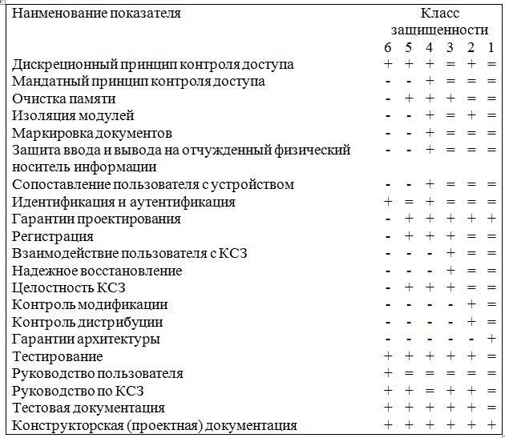

Данный руководящий документ устанавливает классификацию СВТ по уровню защищенности от НСД к информации на базе перечня показателей защищенности и совокупности описывающих их требований. Под СВТ понимается совокупность программных и технических элементов систем обработки данных, способных функционировать самостоятельно или в составе других систем.
Данные показатели содержат требования защищенности СВТ от НСД к информации и применяются к общесистемным программным средствам и операционным системам. Конкретные перечни показателей определяют классы защищенного СВТ и описываются совокупностью требований. Совокупность всех средств защиты составляет комплекс средств защиты (КСЗ).
Установлено семь классов защищенности СВТ от НСД к информации. Самые низкие требования представляются к системам, соответствующим седьмому классу, самые высокие – к первому. Классы подразделяются на четыре группы, отличающиеся качественным уровнем защиты:
• первая группа содержит только один седьмой класс;
• вторая группа характеризуется дискреционной защитой и содержит шестой и пятый классы;
• третья группа характеризуется мандатной защитой и содержит четвертый, третий и второй классы;
• четвертая группа характеризуется верифицированной защитой исодержит только первый класс.
Выбор класса защищенности СВТ для автоматизированных систем (АС), создаваемых на базе защищенных СВТ, зависит от грифа секретности обрабатываемой в АС информации, условий эксплуатации и расположения объектов системы. Показатели защищенности и установленные требования к классам приведены в таблице 1.
Распределение показателей защищенности по классам СВТ
Таблица 1

Обозначения:
«-» – нет требований к данному классу;
«+» – новые или дополнительные требования;
«=» – требования совпадают с требованиями к СВТ предыдущего класса;
Конкретные требования, предъявляемые к различным классам СВТ изложены в соответствующем документе ГТК.
Седьмой класс присваивают СВТ, к которым предъявлялись требования по защите от НСД к информации, но при оценке защищенность СВТ оказалась ниже уровня требований шестого класса.
Оценка класса защищенности СВТ проводится группой экспертов.
Эксперты должны знать все нормативные требования и документы по проблемам защиты СВТ от НСД к информации, назначение и функционирование СВТ и пройти соответствующую аттестацию на допуск к таким работам.
Выполняется два вида работ:
• оценка проекта;
• оценка класса защищенности СВТ.
Оценка проекта (создаваемого СВТ или модернизируемого с целью повышения уровня защищенности) проводится путем всестороннего изучения конструкторской (проектной) документации на СВТ и ее соответствия требованиям заданного класса защищенности.
Результат – предварительное техническое заключение экспертов о достаточности предлагаемых мер и соответствии предъявленным требованиям.
Оценка класса защищенности СВТ проводится в два этапа:
• первый этап – изучают документацию к СВТ: описание принципов работы, описание ПРД, описание КСЗ, тесты, отчеты о проведенных исследованиях и другие документы. (Техническое заключение по данному этапу должно отражать соответствие описанных в документации свойств СВТ и предъявленных требований);
• второй этап – проводят всестороннее тестирование СВТ (как функциональное, так и на проникновение) по специальной программе и методике, а также оценку эффективности реализации средств защиты.
Испытания могут, при необходимости, дополняться в установленном порядке другими проверками, а также включать оценку тестов разработчика.
По итогам второго этапа оценки СВТ составляется техническое заключение, в котором излагается:
• описание комплекса средств защиты;
• оценка класса защищенности СВТ в соответствии с заданнымипоказателями;
• наличие и соответствие дополнительных требований;
• аргументация оценки: объяснение соответствия КСЗ требованиямданных показателей, посредством каких средств обеспечивается выполнение каждого требования;
• описание испытаний, которым подвергалось СВТ (с указанием состава технических и программных средств);
• вывод о соответствии СВТ определенному классу защищенностии объяснение, почему СВТ не может быть сертифицировано по более высокому классу защищенности;